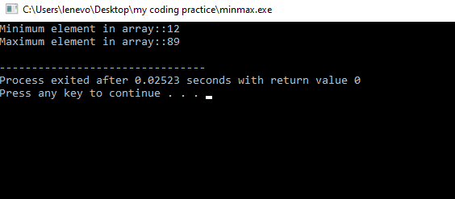

Experiment 5B: Problem Statement 2
Write a program in any language to find the maximum and
minimum element in an array.
Code
Results
Sample Output

Variables Used
- n: size of array
- arr:array with size n
- max:store max element of array
- min:store min element of array